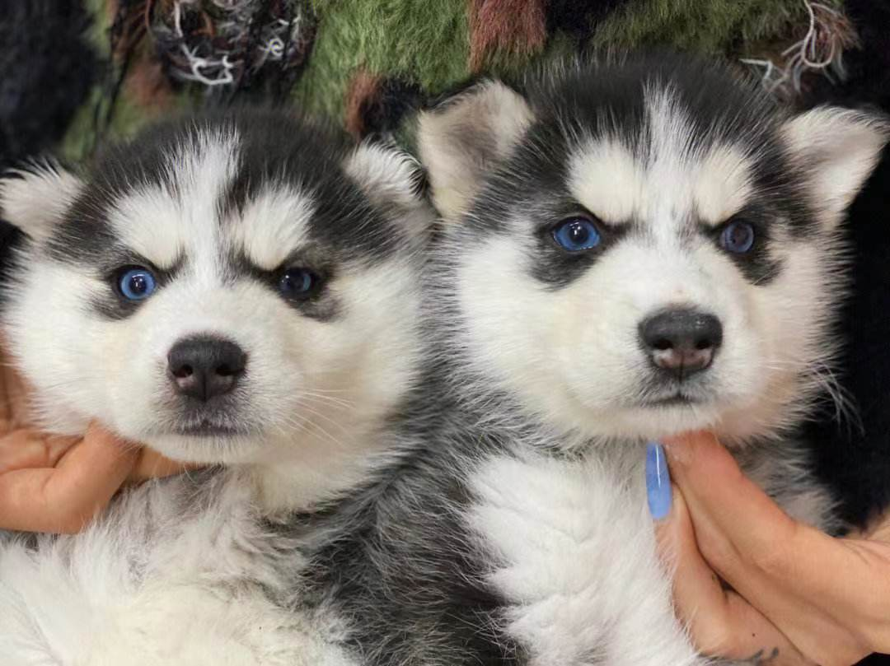
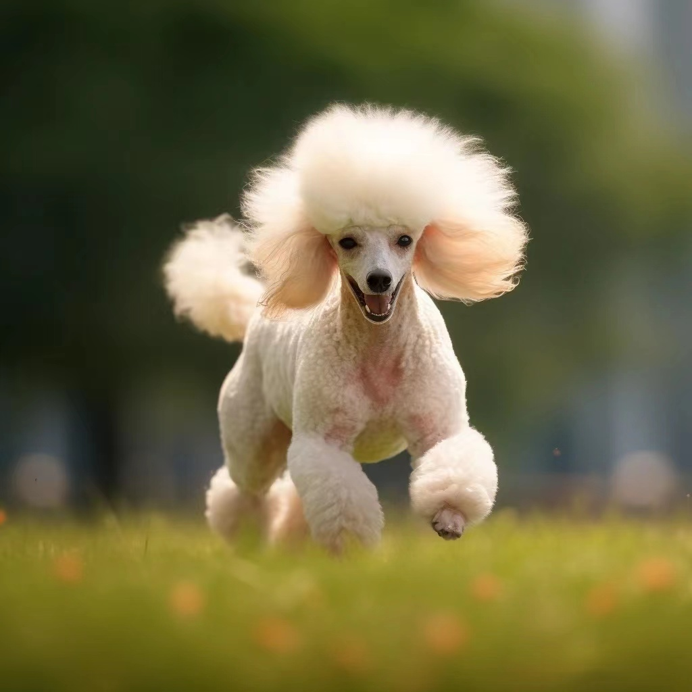
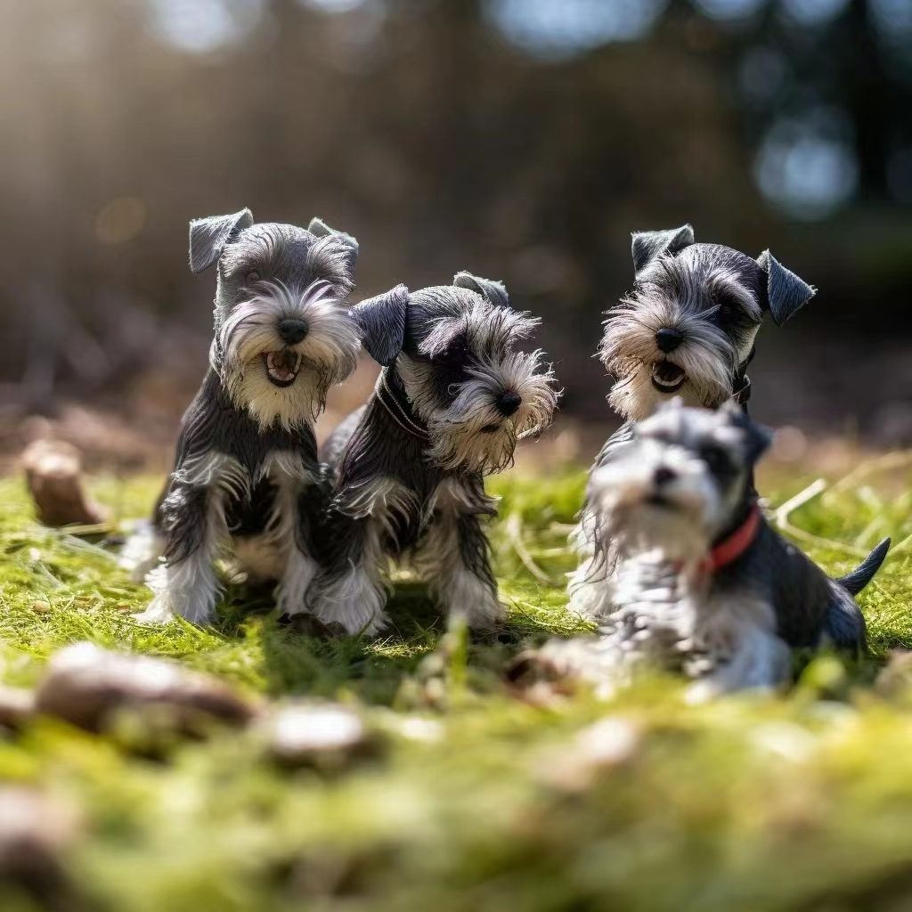

种类 |
||||||
|  | 西伯利亚雪橇犬西伯利亚雪橇犬是原始的古老犬种，主要生活在西伯利亚东北部、格陵兰南部。哈士奇名字是源自其独特的嘶哑叫声[1]。 哈士奇性格多变，有的极端胆小，也有的极端暴力，进入人类社会和家庭的哈士奇，都已经没有了这种极端的性格，比较温顺， 是一种流行于全球的宠物犬。哈士奇、金毛犬与拉布拉多并列为三大无攻击性犬类[2]，被世界各地人们广泛饲养， 并在全球范围内有大量该犬种的赛事。 |
|||||
|  | 贵宾犬贵宾犬（ Poodle），也称"贵妇犬"，又称"卷毛狗"，在德语中， Pudel 是"水花飞溅"的意思，是犬亚科犬属的一种动物。 贵宾犬的来源就像它为了拖出猎禽所涉过的水一样浑浊不清。 |
|||||
|  | 雪纳瑞犬雪纳瑞共有三个品种：大型、标准型、小型三种。原产地为德国，体长等于身高，呈正方形体型。背毛浓密粗硬，毛色有黑色和胡椒色， 脸部毛稍短。耳小呈 V 字形，向前边垂下。嘴边长有胡墅。眼大小适中，呈暗色。胸宽深，臀强硬，腹上收。前肢直立， 后肢宽阔结实，断尾，擎起 |
|||||
宠物 |
||||||